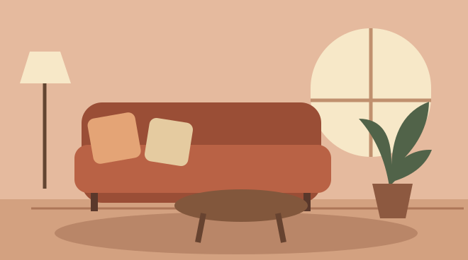

01 / AMBIENTES
Sala de Estar
Organize os móveis para conversar, receber visitas e circular com facilidade.
Ler sobre Sala de EstarBLOG DE DECORAÇÃO
Explore ideias de decoração para sala de estar, quartos e cozinha. Cada guia reúne sugestões de layout, iluminação ou organização que você pode experimentar com o que já tem em casa.
Explorar ambientes
GUIAS DE DECORAÇÃO
Três ambientes, três jeitos de começar.
01 / AMBIENTES
Organize os móveis para conversar, receber visitas e circular com facilidade.
Ler sobre Sala de Estar
02 / AMBIENTES
Combine luz suave, tecidos confortáveis e espaço livre perto da cama.
Ler sobre Quartos
03 / AMBIENTES
Organize os utensílios por tarefa e preserve espaço na bancada para preparar alimentos.
Ler sobre Cozinha